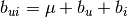
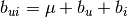

Collaborative Filtering¶
Collaborative filtering is a technique that is widely used in recommendation systems to suggest items (for example, products, movies, articles) to potential users based on historical records of items that users have purchased, rated, or viewed. The Trusted Analytics Platform provides implementations of collaborative filtering with either Alternating Least Squares (ALS) or Conjugate Gradient Descent (CGD) optimization methods.
Both methods optimize the cost function found in Y. Koren, Factorization Meets the Neighborhood: a Multifaceted Collaborative Filtering Model in ACM KDD 2008. For more information on optimizing using ALS see, Y. Zhou, D. Wilkinson, R. Schreiber and R. Pan, Large-Scale Parallel Collaborative Filtering for the Netflix Prize , 2008.
CGD provides a faster, more approximate optimization of the cost function and should be used when memory is a constraint.
A typical representation of the preference matrix P in Giraph is a bipartite graph, where nodes at the left side represent a list of users and nodes at the right side represent a set of items (for example, movies), and edges encode the rating a user provided to an item. To support training, validation and test, a common practice in machine learning, each edge is also annotated by “TR”, “VA” or “TE”.

A typical representation of the preference matrix P
Each node in the graph will be associated with a vector
 of length
of length  , where
is the feature dimension specified by the user, and a bias term
, where
is the feature dimension specified by the user, and a bias term  .
The predictions for item
.
The predictions for item  , from user
, from user  care given by
dot product of the feature vector and the user vector, plus the item and user
bias terms:
/home/work/atk/engine-plugins/giraph-plugins/src/main/scala/org/trustedanalytics/atk/giraph/plugins/model/cf/CollaborativeFilteringNewPlugin.scala
care given by
dot product of the feature vector and the user vector, plus the item and user
bias terms:
/home/work/atk/engine-plugins/giraph-plugins/src/main/scala/org/trustedanalytics/atk/giraph/plugins/model/cf/CollaborativeFilteringNewPlugin.scala

The parameters of the above equation are chosen to minimize the regularized mean squared error between known and predicted ratings:

How this optimization is accomplished depends on whether the use uses the ALS or CGD functions respectively. It is recommended that the ALS method be used to solve collaborative filtering problems. The CGD method uses less memory than ALS, but it returns an approximate solution to the objective function and should only be used in cases when memory required for ALS is prohibitively high.
Using ALS Optimization to Solve the Collaborative Filtering Problem
ALS optimizes the vector  and the bias
and the bias
 alternatively between user profiles using least squares on users
and items.
On the first iteration, the first feature of each item is set to its average
rating, while the others are set to small random numbers.
The algorithm then treats the
alternatively between user profiles using least squares on users
and items.
On the first iteration, the first feature of each item is set to its average
rating, while the others are set to small random numbers.
The algorithm then treats the  ‘s as constant and optimizes
‘s as constant and optimizes
 for each user,
for each user,  .
For an individual user, this is a simple ordinary least squares optimization
over the items that user has ranked.
Next, the algorithm takes the
.
For an individual user, this is a simple ordinary least squares optimization
over the items that user has ranked.
Next, the algorithm takes the  ‘s as constant and optimizes the
‘s as constant and optimizes the
 for each item,
for each item,  .
This is again an ordinary least squares optimization predicting the user
rating of person that has ranked item .
.
This is again an ordinary least squares optimization predicting the user
rating of person that has ranked item .
At each step, the bias is computed for either items of users and the objective function, shown below, is evaluated. The bias term for an item or user, computed for use in the next iteration is given by:

The optimization is said to converge if the change in the objective function is less than the convergence_threshold parameter or the algorithm hits the maximum number of supersteps.

Note that the equations above omit user and item subscripts for generality.
The  regularization term, lambda, tries to avoid over-fitting by
penalizing the magnitudes of the parameters, and
regularization term, lambda, tries to avoid over-fitting by
penalizing the magnitudes of the parameters, and  is a trade-off
parameter that balances the two terms and is usually determined by cross
validation (CV).
is a trade-off
parameter that balances the two terms and is usually determined by cross
validation (CV).
After the parameters and are
determined, given an item the rating from user can
be predicted by the simple linear model:
Matrix Factorization based on Conjugate Gradient Descent (CGD)
This is the Conjugate Gradient Descent (CGD) with Bias for collaborative filtering algorithm. Our implementation is based on the paper:
Y. Koren. Factorization Meets the Neighborhood: a Multifaceted Collaborative Filtering Model. In ACM KDD 2008. (Equation 5) http://public.research.att.com/~volinsky/netflix/kdd08koren.pdf
This algorithm for collaborative filtering is used in recommendation systems to suggest items (products, movies, articles, and so on) to potential users based on historical records of items that all users have purchased, rated, or viewed. The records are usually organized as a preference matrix P, which is a sparse matrix holding the preferences (such as, ratings) given by users to items. Similar to ALS, CGD falls in the category of matrix factorization/latent factor model that infers user profiles and item profiles in low-dimension space, such that the original matrix P can be approximated by a linear model.
This factorization method uses the conjugate gradient method for its optimization subroutine. For more on conjugate gradient descent in general, see: http://en.wikipedia.org/wiki/Conjugate_gradient_method.
The Mathematics of Matrix Factorization via CGD
Matrix factorization by conjugate gradient descent produces ratings by using
the (limited) space of observed rankings to infer a user-factors vector
 for each user , and an item-factors vector
for each user , and an item-factors vector
 for each item , and then producing a ranking by user
of item by the dot-product
for each item , and then producing a ranking by user
of item by the dot-product  where
where  is a baseline ranking calculated as .
is a baseline ranking calculated as .
The optimum model is chosen to minimum the following sum, which penalizes square distance of the prediction from observed rankings and complexity of the model (through the regularization term):

Where:
— Observed ranking of item
— Set of pairs
for each observed ranking of item
— The average rating over all ratings of all items by all users.
— How much user
— How much item
— A regularization parameter specified by the user.
This optimization problem is solved by the conjugate gradient descent method. Indeed, this difference in how the optimization problem is solved is the primary difference between matrix factorization by CGD and matrix factorization by ALS.
Comparison between CGD and ALS
Both CGD and ALS provide recommendation systems based on matrix factorization; the difference is that CGD employs the conjugate gradient descent instead of least squares for its optimization phase. In particular, they share the same bipartite graph representation and the same cost function.
- ALS finds a better solution faster - when it can run on the cluster it is given.
- CGD has slighter memory requirements and can run on datasets that can overwhelm the ALS-based solution.
When feasible, ALS is a preferred solver over CGD, while CGD is recommended only when the application requires so much memory that it might be beyond the capacity of the system. CGD has a smaller memory requirement, but has a slower rate of convergence and can provide a rougher estimate of the solution than the more computationally intensive ALS.
The reason for this is that ALS solves the optimization problem by a least squares that requires inverting a matrix. Therefore, it requires more memory and computational effort. But ALS, a 2nd-order optimization method, enjoys higher convergence rate and is potentially more accurate in parameter estimation.
On the other hand, CGD is a 1.5th-order optimization method that approximates the Hessian of the cost function from the previous gradient information through N consecutive CGD updates. This is very important in cases where the solution has thousands or even millions of components.
Usage
The matrix factorization by CGD procedure takes a property graph, encoding a bipartite user-item ranking network, selects a subset of the edges to be considered (via a selection of edge labels), takes initial ratings from specified edge property values, and then writes each user-factors vector to its user vertex in a specified vertex property name and each item-factors vector to its item vertex in the specified vertex property name.